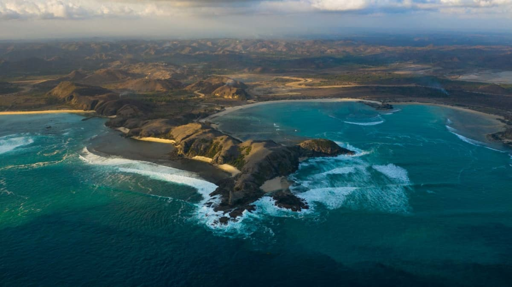

1.Pantai Kuta

Objek wisata ini terletak di Desa Kuta, Kecamatan Pujut, Kabupaten Lombok Tengah. Lokasinya dekat dengan Bandara Internasional Lombok, sehingga sangat mudah untuk dijangkau. Untuk lebih jelassnya silahkan klik judul di atas!!!!
2.Pantai Selong Belanak
Pantai Selong Belanak merupakan salah satu pantai di Lombok yang cukup terkenal. Meskipun masih dalam tahap pengembangan, pantai ini tidak memiliki banyak pengunjung dibandingkan beberapa pantai terkenal lainnya di Lombok. Wisatawan dapat melakukan berbagai aktivitas menyenangkan saat berada di pantai ini. Misalnya berenang, main pasir, swafoto hingga berselancar.... Baca Selengkapnya!!
3. Desa Adat Sade Lombok
Desa Sade ini berada di Rembitan Pujut, Lombok Tengah, Provinsi Nusa Tenggara Barat. Para pengunjung akan disuguhkan dengan pemandangan rutinitas dari penduduk asli suku sasak. Pengunjung juga dapat belajar langsung tentang adat dan budaya dari suku sasak yang diajarkan langsung oleh warga setempat, misalnya menenun.Untuk lebih lanjut silahkan klik judul di atas
4.Pantai Mawun
Pantai Mawun salah satu objek wisata bahari yang indah di Pujut, Lombok Tengah yang menarik dijelajahi. Pantai pasir putih yang memiliki ombak yang cocok untuk berselancar dan pemandangan bukit cantik nan hijau. Untuk lebh jelassnya klik gambar di atas..
5.Benang Kelambu
Air Terjun Benang Kelambu merupakan air terjun yang cukup terkenal hingga mancanegara begitu pula. Hal ini membuat Air Terjun ini menjadi destinasi wisata yang wajib Anda kunjungi saat ke Lombok. Selengkapnya..
6.Bukit Meresek
Bukit Merese menjadi salah satu objek wisata andalan di kawasan Mandalika, Lombok Tengah, NTB. Merese menawarkan pemandangan memesona dengan pantai-pantai sekitar Mandalika yang terlihat dari atas bukit. Kabarnya, di atas bukit traveler bisa menikmati sunrise serta sunset. Jadi memang Bukit Merese tetap asyik dikunjungi baik pagi maupun sore. Klik Gambar di atass!!!